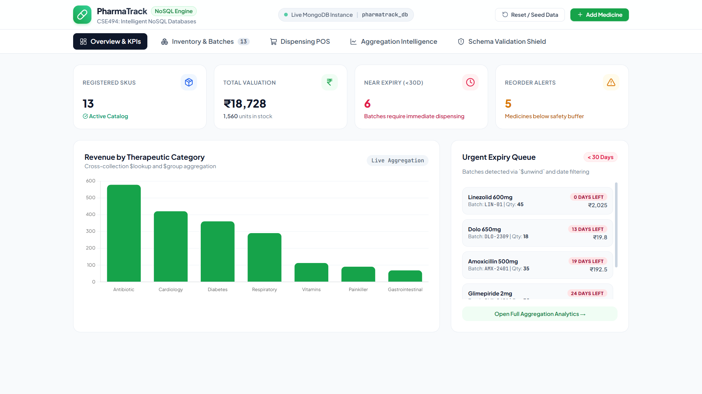
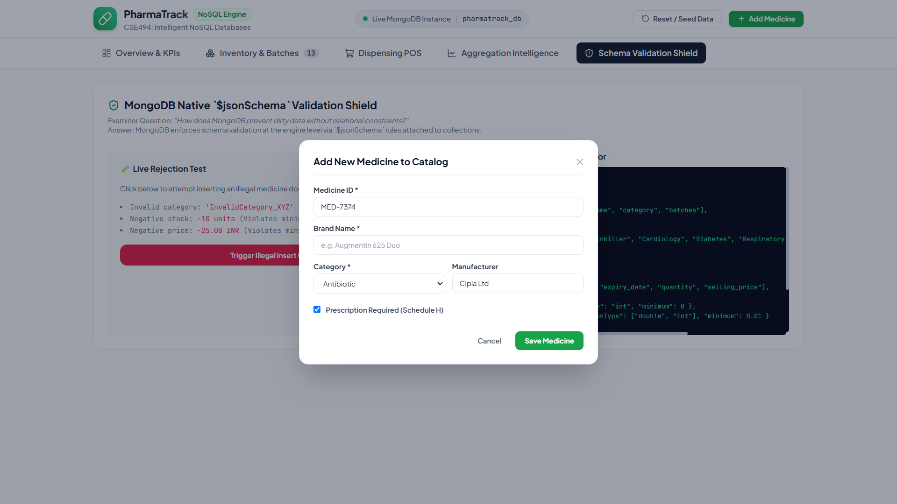
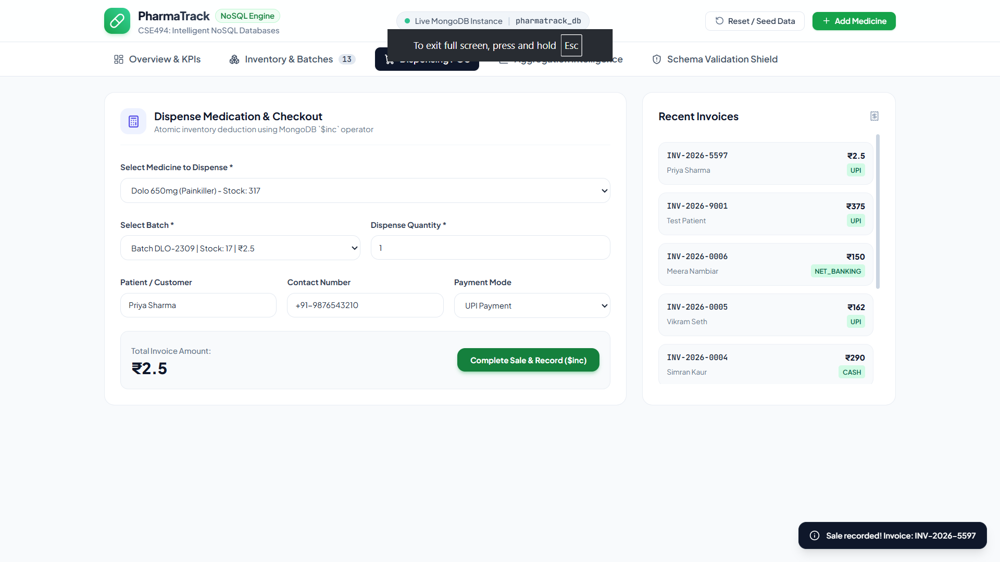
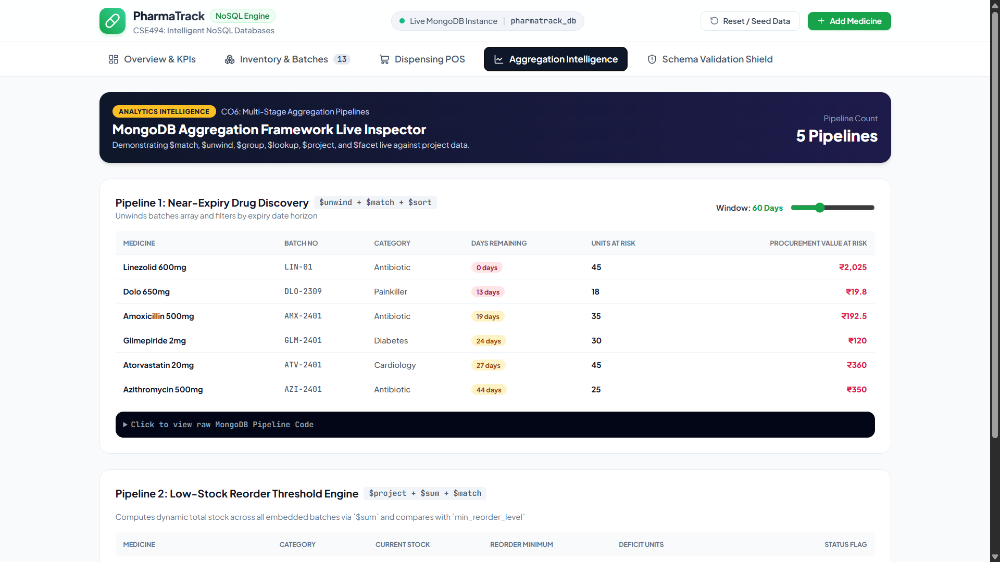
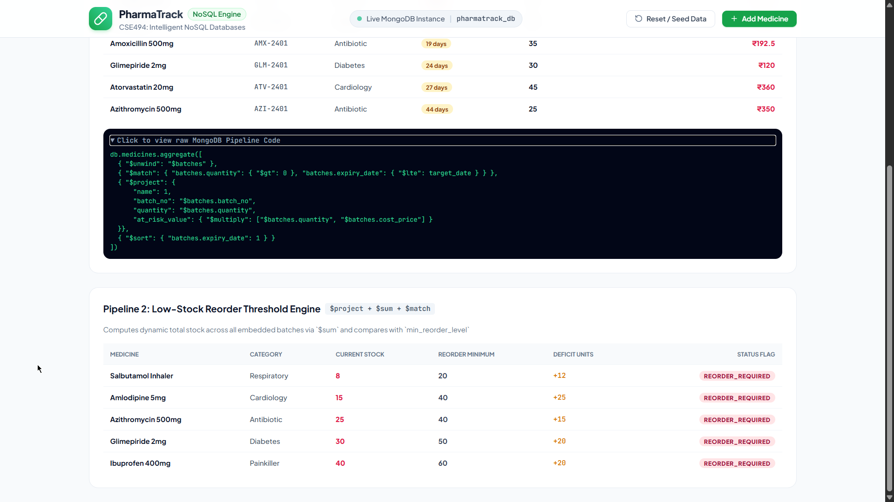
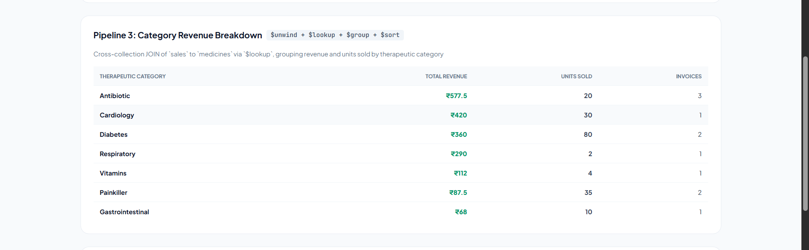
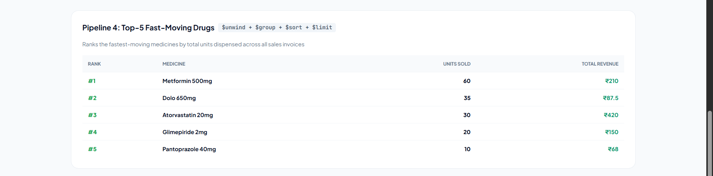
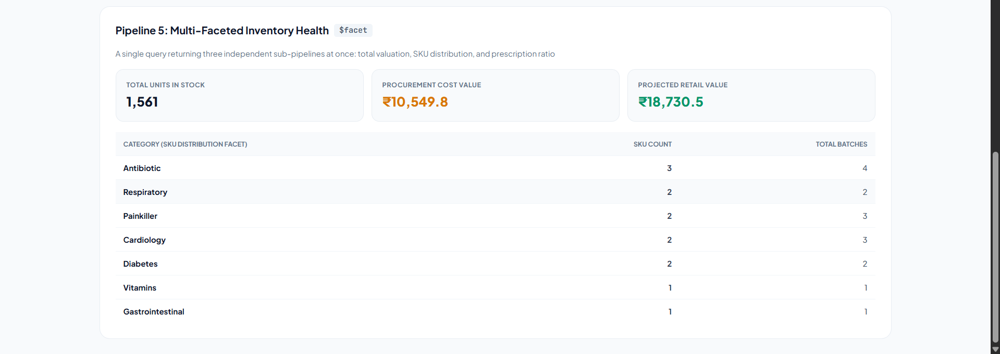
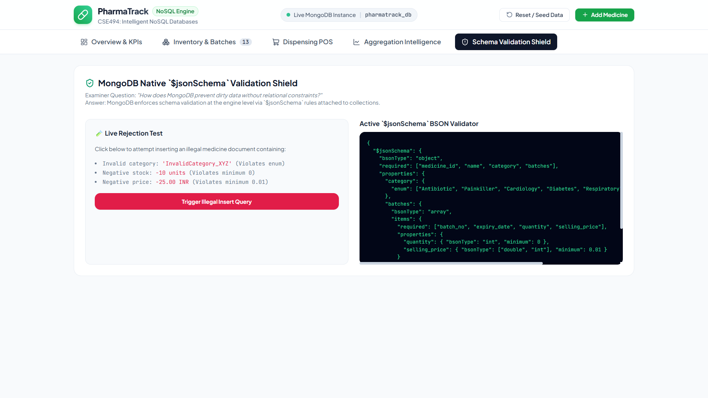

A production-grade document-oriented database application that uses MongoDB to prevent the dispensing of expired drugs, eliminate critical medicine stock-outs, and deliver real-time pharmacy inventory analytics — capabilities that traditional relational databases achieve only through expensive multi-table JOINs and rigid schema migrations.
Every retail pharmacy, clinic dispensary, and hospital inventory department operates under strict legal and patient-safety constraints. Three real-world problems recur across the domain:
tbl_medicine, tbl_batch, tbl_sales,
tbl_sale_items).ALTER TABLE migrations.The project is engineered to demonstrate end-to-end mastery of document-database design mapped to the course outcomes CO4, CO5 and CO6:
medicines collection that
embeds active batches (1-to-few) and a sales collection that
references medicines (1-to-unbounded), and justify each modeling decision.$jsonSchema validators so
the database engine itself rejects negative stock, non-positive prices, invalid therapeutic
categories, and empty invoices.$push, $pull, $set, $inc,
positional $).The project uses a self-curated, domain-realistic dataset that models the inventory and
sales ledger of a mid-sized Indian retail pharmacy. The dataset is generated programmatically by the
schema-aware seeder (database/seed_data.py) so that it can be reproduced deterministically
and always satisfies the collection validators. It is deliberately engineered to contain the exact
edge-cases the analytics must detect (near-expiry batches, below-threshold stock, multi-category sales).
| Collection | Documents | Modeling pattern | Representative fields |
|---|---|---|---|
medicines | 12 drugs across 7 therapeutic categories | Embedded (1-to-few): each drug embeds an array of manufacturing batches |
medicine_id, name, generic_name, category,
manufacturer, prescription_required, min_reorder_level,
batches[ ] |
medicines.batches[] | 18 embedded batch sub-documents | Nested array sub-documents | batch_no, mfg_date, expiry_date, quantity,
cost_price, selling_price |
sales | 6 invoices (seeded) — grows with every dispensed sale | Referenced (1-to-unbounded): line items reference medicine_id |
invoice_no, sale_date, customer{ }, items[ ],
total_amount, payment_mode, status |
Real market products are represented — for example Amoxicillin 500 mg (Cipla), Dolo 650 mg / Paracetamol (Micro Labs), Atorvastatin 20 mg (Dr. Reddy's), Metformin 500 mg (USV) and Salbutamol Inhaler (Cipla) — spanning the Antibiotic, Painkiller, Cardiology, Diabetes, Respiratory, Vitamins and Gastrointestinal classes. Several batches are intentionally dated to expire within 14–28 days, and several drugs are seeded below their reorder level, so the aggregation pipelines produce meaningful, non-empty results.
The dataset is originally authored for this project (synthetic but domain-accurate) rather than downloaded from a third-party corpus, because document databases require data in a specific nested shape and with precisely controlled edge-cases that public flat CSV datasets do not provide. Full provenance:
| Item | Detail |
|---|---|
| Primary source (code) | Generated in-repository by database/seed_data.py → SAMPLE_MEDICINES
and SAMPLE_SALES. This file is the authoritative, reproducible dataset definition. |
| Drug names & manufacturers | Modeled on real, publicly listed Indian pharmaceutical products. |
| Reference — drug catalogue | https://www.1mg.com/drugs-all-medicines (Tata 1mg public medicine directory) |
| Reference — regulatory list | CDSCO — Central Drugs Standard Control Organisation, approved drugs |
| Regeneration command | python -c "from config.db_config import get_db; from database.seed_data import seed_database; seed_database(get_db())" |
| Layer | Technology | Role in the project |
|---|---|---|
| NoSQL database | MongoDB 7.0 (document store) | Primary data engine. Stores JSON/BSON documents, enforces $jsonSchema, and runs
the aggregation framework. MongoDB is horizontally scalable via sharded clusters, so the
same code scales from a single node to a distributed cluster. |
| Data-processing engine | MongoDB Aggregation Pipeline framework | Server-side, multi-stage distributed computation ($unwind, $match,
$group, $lookup, $facet, $project) — the
cluster-side analytics layer, replacing external compute. |
| Programming language | Python 3.11 | All application and analytics logic. |
| Database driver | PyMongo ≥ 4.6 | Official MongoDB driver connecting Python to the database. |
| Web dashboard | Flask + Streamlit | Two interactive front-ends: a Flask REST-API single-page dashboard and a Streamlit analytics app. |
| Supporting libraries | python-dotenv, tabulate, rich, mongomock | Config loading, terminal tables, rich CLI output, and an in-memory MongoDB for offline testing. |
| Testing | pytest (23 tests) | Automated unit + integration tests across config, schema, CRUD, aggregations and web API. |
| Environment | Windows 11, VS Code, Git-tracked project | Development and demonstration environment. |
mongod nodes coordinated by a
query router, and the aggregation pipeline executes across those shards. This project runs on a
single developer node, but the data model and pipelines are cluster-ready without code changes.
The system is built in a modular, layered architecture. Each layer is implemented and verified before the next is added:
config/db_config.py loads MONGODB_URI from a .env file and
returns a cached MongoClient. If no live server responds within the timeout, it
transparently falls back to an in-memory mongomock client, so the project runs and tests
even on a machine without MongoDB installed.
Two collections are designed in pharmatrack_db:
batches.$.quantity) give atomic single-document stock changes — no JOINs,
no risk of the 16 MB document limit.medicine_id. A pharmacy issues unbounded invoices over time; embedding them would grow
medicine documents without limit, so referencing is the correct pattern.database/schema_validation.py defines $jsonSchema validators and attaches
them through create_collection / collMod with
validationAction: "error". The engine then rejects invalid categories (via an
enum), negative quantities (minimum: 0), non-positive prices
(minimum: 0.01) and empty invoices (minItems: 1).
core/crud.py implements all operations with PyMongo atomic operators:
create_medicine (insert_one), add_batch_to_medicine
($push), update_batch_stock (positional $inc),
delete_batch ($pull), and a transactional process_sale that
validates stock, atomically decrements batches, and records the invoice.
core/aggregations.py implements five multi-stage pipelines:
Flattens batches, keeps those expiring within N days with stock > 0, computes at-risk financial value, sorts by urgency.
Sums batch quantities per drug, flags those at or below the reorder level, computes deficit and OUT_OF_STOCK / REORDER status.
Cross-collection JOIN of sales to medicines, grouping revenue and units sold by therapeutic category.
Ranks fastest-moving drugs by total units sold.
A single query returning three independent analytics sub-pipelines at once — SKU distribution, Rx-vs-OTC ratio, and total cost/retail valuation.
Three interfaces consume the same core logic: an interactive terminal console
(cli.py), a Flask single-page web dashboard (web_app.py), and a Streamlit
analytics dashboard (app.py). Correctness is proven by
verify_project.py (a 6-step end-to-end run) and a 23-test pytest suite.
The complete, properly formatted source code of the project — every application module and the full 23-test automated suite — is hosted in a public GitHub repository for direct review, cloning, and execution.
The codebase is organised into clear architectural layers:
| File / Module | Responsibility |
|---|---|
config/db_config.py | MongoDB connection manager with graceful mock fallback |
database/schema_validation.py | Native $jsonSchema validators for both collections |
database/seed_data.py | Realistic pharmacy dataset + schema-aware seeder |
core/crud.py | Pure PyMongo Create / Read / Update / Delete operations |
core/aggregations.py | The five multi-stage aggregation pipelines |
cli_app.py | Terminal dashboard, table formatters & negative-validation demo |
cli.py | CLI entry point |
web_app.py | Flask REST API + single-page dashboard backend |
app.py | Streamlit interactive dashboard |
verify_project.py | Automated end-to-end verification suite |
tests/ | Automated pytest suite — 23 tests across config, schema, CRUD, aggregations & web API |
requirements.txt | Python dependencies (pymongo, flask, streamlit, pytest, …) |
pip install -r requirements.txt followed by python verify_project.py or
python web_app.py, exactly as evidenced in Section 9.This section evidences the project running. The terminal transcripts below are the actual, unedited output captured from running the project against a live MongoDB 7.0 instance.
Command: python verify_project.py — connects to MongoDB, enforces schema validation,
seeds the dataset, runs full CRUD, and executes all five aggregation pipelines.
===========================================================================
PHARMATRACK: AUTOMATED SYSTEM VERIFICATION SUITE
CSE494 Intelligent NoSQL Databases - CA-2 Project
===========================================================================
[STEP 1/6] Connecting to Database...
[OK] Connected to DB: 'pharmatrack_db' via Live MongoDB Instance
[STEP 2/6] Enforcing MongoDB $jsonSchema Validation...
[OK] Medicines Schema: updated
[OK] Sales Schema: updated
[OK] Negative Validation Check: Caught = True (WriteError)
[STEP 3/6] Seeding Realistic Pharmacy Dataset...
[OK] Seeded 12 medicines and 6 sales invoices.
[STEP 4/6] Executing CRUD Operations...
[OK] CREATE: Medicine 'Linezolid 600mg' (MED-VERIFY-01) successfully inserted.
[OK] CREATE (Embedded): Batch 'LIN-01' pushed via atomic $push.
[OK] READ: Retrieved 'Linezolid 600mg' with 1 batch(es).
[OK] UPDATE: Updated manufacturer via $set.
[OK] SALE & ATOMIC DECREMENT: Decremented batch quantity from 50 -> 45.
[STEP 5/6] Executing MongoDB Aggregation Pipelines...
[OK] Pipeline 1 (Near Expiry): Found 6 critical batches expiring within 60 days.
- Linezolid 600mg (LIN-01): 0 days left | At Risk: INR 2025.0
- Dolo 650mg (DLO-2309): 13 days left | At Risk: INR 19.8
[OK] Pipeline 2 (Low Stock Reorder): Found 5 medicines below threshold.
- Salbutamol Inhaler: Total Stock = 8 | Min Level = 20 | Deficit = 12
- Amlodipine 5mg: Total Stock = 15 | Min Level = 40 | Deficit = 25
[OK] Pipeline 3 (Category Sales Revenue): Top category is 'Antibiotic' with INR 577.50
[OK] Pipeline 4 (Top Bestsellers): Top selling drug is 'Metformin 500mg' (60 units sold).
[OK] Pipeline 5 ($facet Dashboard): Overall valuation = INR 18,730.50 across 1561 total units.
[STEP 6/6] Academic Verification Verdict...
===========================================================================
[PASSED] MongoDB Document Schema Design: Embedded Batches + Referenced Sales
[PASSED] Schema Validation: Enforced via $jsonSchema
[PASSED] CRUD Operations: Full coverage with PyMongo
[PASSED] Aggregation Pipelines: 5 Multi-Stage Pipelines ($unwind, $match, $group, $facet)
[PASSED] Ready for Presentation, Report Submission, and Viva Examination!
===========================================================================Command: python -m pytest tests/ -v — all 23 tests pass in ~1 second.
============================= test session starts =============================
platform win32 -- Python 3.11.2, pytest-9.2.0, pluggy-1.7.0
rootdir: X:\College\7th Sem\NOSQL\CA-2 Project
plugins: anyio-4.8.0, Faker-37.3.0
collected 23 items
tests/test_aggregations.py::test_near_expiry_batches PASSED [ 4%]
tests/test_aggregations.py::test_low_stock_medicines PASSED [ 8%]
tests/test_aggregations.py::test_category_sales_revenue PASSED [ 13%]
tests/test_aggregations.py::test_top_selling_medicines PASSED [ 17%]
tests/test_aggregations.py::test_inventory_health_facet PASSED [ 21%]
tests/test_cli.py::test_cli_table_formatters PASSED [ 26%]
tests/test_cli.py::test_negative_validation_demo PASSED [ 30%]
tests/test_config.py::test_db_config_defaults PASSED [ 34%]
tests/test_config.py::test_get_client PASSED [ 39%]
tests/test_crud.py::test_medicine_create_and_read PASSED [ 43%]
tests/test_crud.py::test_add_batch_and_update PASSED [ 47%]
tests/test_crud.py::test_search_medicines PASSED [ 52%]
tests/test_crud.py::test_process_sale_success_and_insufficient_stock PASSED [ 56%]
tests/test_crud.py::test_delete_batch_and_medicine PASSED [ 60%]
tests/test_schema_validation.py::test_schema_definitions PASSED [ 65%]
tests/test_schema_validation.py::test_apply_schema_validation PASSED [ 69%]
tests/test_seed_data.py::test_sample_data_structures PASSED [ 73%]
tests/test_seed_data.py::test_seed_database_execution PASSED [ 78%]
tests/test_web_api.py::test_api_status PASSED [ 82%]
tests/test_web_api.py::test_api_medicines_list PASSED [ 86%]
tests/test_web_api.py::test_api_aggregations_expiry PASSED [ 91%]
tests/test_web_api.py::test_api_aggregations_facets PASSED [ 95%]
tests/test_web_api.py::test_api_negative_validation PASSED [100%]
============================= 23 passed in 1.01s ==============================Command: python web_app.py — starts the Flask single-page dashboard on
http://127.0.0.1:5000.
=================================================================
PHARMATRACK: Modern React-Style Web App Running!
URL: http://127.0.0.1:5000
CSE494 Intelligent NoSQL Databases - CA-2 Project
=================================================================
* Serving Flask app 'web_app'
* Debug mode: on
* Running on http://127.0.0.1:5000
Press CTRL+C to quitFinal application outputs — the interactive dashboard, CRUD operations, the point-of-sale flow, each aggregation pipeline result, and live schema-validation rejection.

report_assets/10a_executive_dashboard.png
report_assets/10b_inventory_crud.png
report_assets/10c_pos_sale.png
report_assets/10d_near_expiry.png
report_assets/10e_low_stock.png
report_assets/10f_category_revenue.png
report_assets/10i_top_sellers.png
report_assets/10h_facet_dashboard.png
report_assets/10g_schema_rejection.pngRunning the system against the seeded dataset produces the following verified results:
| Analytics pipeline | Observed result on seeded data | Interpretation |
|---|---|---|
| Near-Expiry Alerts (60-day window) | 6 critical batches detected; e.g. Dolo 650mg (DLO-2309) — 13 days left | Correctly surfaces the intentionally short-dated batches, quantifying capital at risk. |
| Low-Stock Reorder | 5 medicines below threshold; Salbutamol Inhaler 8/20 (deficit 12), Amlodipine 15/40 (deficit 25) | Reorder logic (total_stock ≤ min_reorder_level)
fires exactly on the under-stocked drugs. |
| Category Revenue ($lookup) | Antibiotic is the top category at ~₹577.50 | Cross-collection join aggregates sales to the correct therapeutic category. |
| Top Best-Seller | Metformin 500mg — 60 units sold | Volume ranking matches the seeded invoices. |
| $facet Valuation | Total retail valuation ~₹18,730.50 across 1,561 units | One query returns distribution, Rx ratio and valuation together. |
| Negative-validation test | Illegal document rejected (WriteError) |
The database engine — not the app — blocks corrupt data. |
| Automated tests | 23 / 23 passed in 1.01s | Every operation verified reproducibly. |
The results confirm the central thesis: by embedding batches and letting MongoDB's aggregation framework compute near-expiry risk, reorder deficits and revenue breakdowns inside the database, PharmaTrack delivers in single pipeline calls what a relational design would require several JOINed queries and external post-processing to achieve. Schema validation guarantees that this intelligence is computed over clean, well-typed data at all times.
PharmaTrack successfully demonstrates an end-to-end intelligent NoSQL solution to a genuine healthcare problem. The project:
$jsonSchema validators and performs
complete, atomic CRUD with PyMongo (CO5);$unwind, $match, $group, $lookup and
$facet (CO6);The outcome is a reproducible, demonstrable system that shows why a document database is the superior choice for inventory domains whose natural unit of work is a nested, together-accessed aggregate. Beyond the academic scope, the same data model and pipelines extend directly to a production, horizontally-sharded MongoDB cluster — underscoring that the design choices made here are not merely assignment conveniences but sound, scalable engineering.
— End of Report —
PharmaTrack · CSE494 Intelligent NoSQL Databases · CA-2 Project